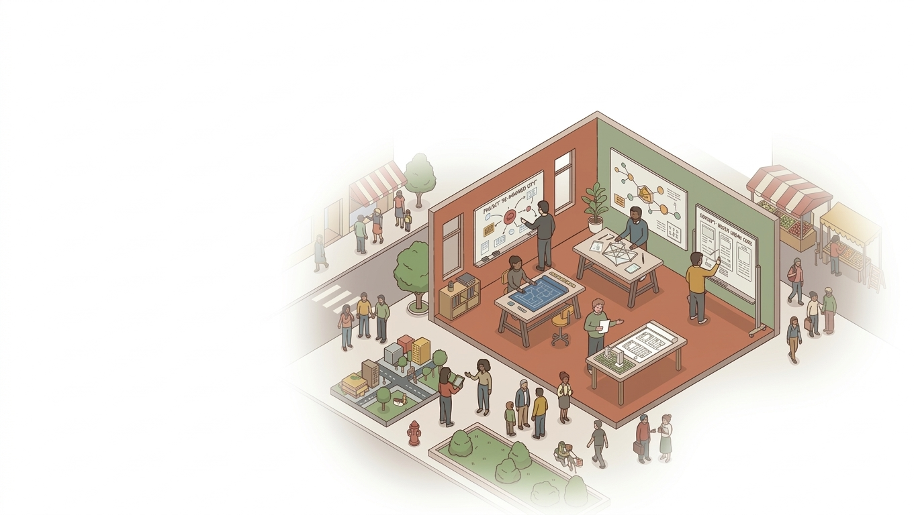
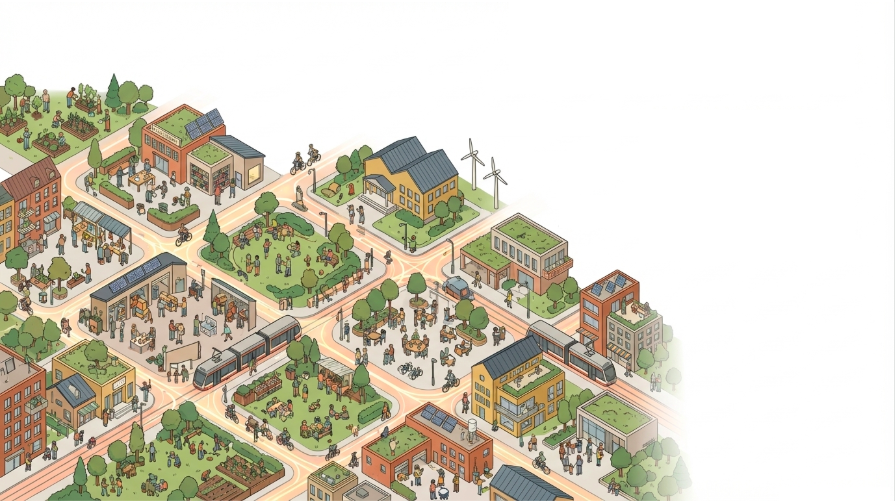
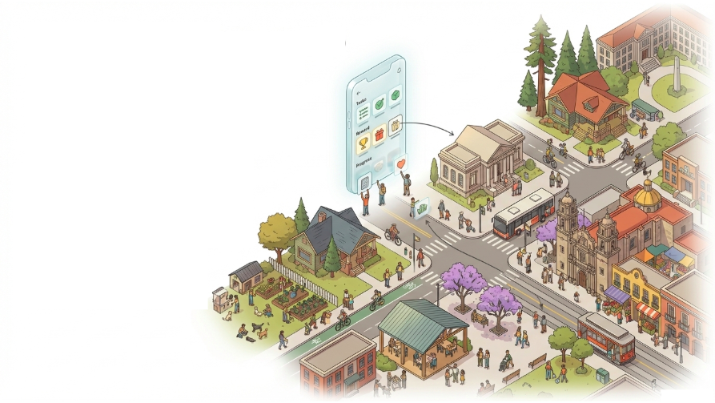
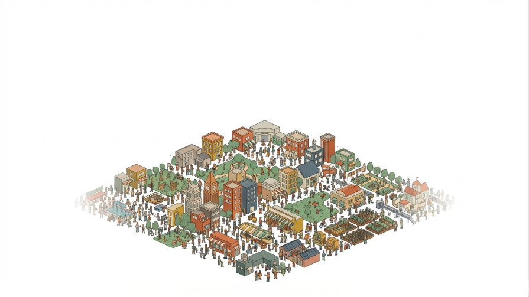
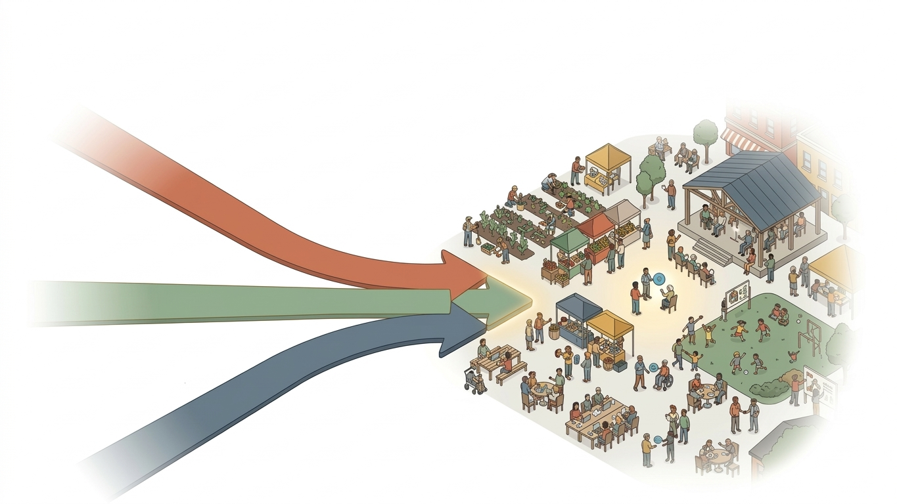

01
Invisible Value
Non-market contributions (care, mutual aid, neighborhood support) are not priced and rarely legible in public systems. What is invisible cannot be planned around.
Civic Coordination Infrastructure
City/Sync builds the digital infrastructure that enables cities to coordinate civic activity, public services, and community participation as a unified system of public administration.
Our Purpose

City/Sync builds programmable coordination infrastructure that helps cities measure, execute, and recognize civic contribution through accessible, rule-based systems.
We are not building a civic media app. We are building an administrative coordination layer that allows institutions and communities to operate in a shared system of execution.
Vision: a world where cities evolve into living coordination networks where public administration is an open, collective effort.
Why Now
People engage in volunteer activity monthly worldwide (roughly 1 in 4 people).
Estimated global value of unpaid care and domestic labor — around 9% of global GDP.
Most civic labor occurs outside formal organizations, in peer-to-peer local networks.

The Problem
Non-market contributions (care, mutual aid, neighborhood support) are not priced and rarely legible in public systems. What is invisible cannot be planned around.
Cities have deep reservoirs of latent civic capacity, but institutions lack mechanisms to route that capacity into consistent, auditable public outcomes.
Top-down execution creates bottlenecks, coordination friction, and opacity when cities need flexible responses to local, high-variance problems.

The Solution
Role systems, procedural logic, and verification pathways for decentralized collective action.
Direct integration with local service ecosystems, so civic contribution connects to real-world institutions.
A replicable implementation model designed for city operations, not one-off experiments.

Who City/Sync Is For
People seeking clear, structured pathways to contribute to the communities they live in.
Organizations doing essential work with limited capacity and high coordination burdens.
Local partners looking for fair, low-friction ways to support and reward public value.
Local governments that need structured mechanisms to coordinate with communities at scale.

The First Step
Objective: demonstrate that programmable coordination can function as a real administrative capability inside existing city environments.
Description: residents complete civic tasks posted by public organizations, and local partners provide benefits in return, creating a verified loop of contribution and recognition.

Core Mechanism
Organizations define civic activities and translate public missions into clear, structured work.
People claim tasks, complete verified work, and earn civic credits tied to contribution.
Partners provide goods and services in exchange for verified credits, which are burned at redemption.

Realizing the Shared Loop
Produce a complete implementation protocol that enables replication in diverse city contexts.
Grow issuer and redeemer ecosystems so contribution and recognition can scale together.
Operate as a real administrative capability inside local institutions and service delivery contexts.
Enable end-to-end participation in varied city environments through one interoperable civic framework.

The Builders
Co-builder and systems architect for City/Sync.
Co-builder and design collaborator on protocol and implementation direction.
Join the Network
Become an issuer, redeemer, or participant. We are seeking cities, civic organizations, researchers, and technologists to help build the coordination infrastructure for the next generation of cities.
Become an Issuer: Translate your mission into structured community action.
Become a Redeemer: Support public value with fair, low-friction benefits.
Become a Participant: Make your contributions visible and valued.
